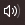

A. Posisi Titik Dalam Bidang Koordinat
Tujuan Pembelajaran:
- Siswa dapat menentukan posisi tempat pada bidang koordinat
- Siswa dapat menentukan posisi titik pada bidang koordinat dengan 4 bagian kuadran
- Siswa dapat menentukan bangun datar yang dibentuk dari titik koordinat
- Siswa dapat menyelesaikan masalah yang berkaitan dengan koordinat kartesius.
Pada koordinat kartesius titik-titik pada bidang koordinat akan menghasilkan sebuah
bangun datar apabila kita hubungkan dengan garis lurus.
3. Menggambar Bangun Datar Pada Bidang Koordinat
Masalah 1.3 : Perhatikan gambar berikut ini!
Gambar 1.7 : Peta Wisata Kota Banjarmasin
Kota Banjarmasin memiliki objek wisata yang sangat
terkenal, diantaranya Mesjid Sabilal Muhtadin, Menara Pandang, Taman Siring 0 Kilometer.
Pada bidang koordinat posisi objek wisata ini berada di titik :
- Taman (0,0)
- Mesjid (-2,-6)
- Menara (-2,-6)

- Bangun datar apa yang akan dihasilkan jika titik Mesjid, Menara, dan
Taman dihubungkan menggunakan ruas garis?
- Berapa luas bangun datar yang terbentuk pada bidang koordinat?

Berdasarkan masalah 1.3, yang akan kita cari adalah :
- Posisi titik Mesjid pada gambar bidang koordinat,
- Posisi titik Menara pada gambar bidang koordinat,
- Posisi titik Taman pada gambar bidang koordinat,
- Bangun datar yang dihasilkan setelah titik-titik tersebut dihubungkan dengan ruas garis,
- Luas bangun datar yang terbentuk pada bidang koordinat.

Agar kita dapat memecahkan permasalahan di atas, perhatikan penjelasan dalam bentuk video animasi di bawah ini
Petunjuk Penggunaan Video Animasi
- Klik tombol untuk memulai video animasi.
- Klik tombol memperbesar video animasi
- Naikkan volume suara  pada perangkat anda

Kerjakan latihan soal berikut ini!
Petunjuk:
- Tekan untuk menggambar titik koordinat
- Geser menu ke arah kiri dan tekan untuk menggambar ruas garis yang mehubungkan antar titik koordinat
- Tekan untuk membatalkan gambar yang telah dibuat
Canvas Bidang Koordinat
1. Tentukan posisi titik A,B dan C pada canvas bidang koordinat di atas dan hubungkan dengan ruas garis maka akan membentuk bangun datar. . . .
- A(-1,1),
- B(2,1),
- C(2,4)
Isikan jawaban anda pada kolom di bawah ini
Tekan cek untuk mengecek jawaban dan tombol ulang untuk mengembalikan jawaban
2. Tentukan posisi titik K,L,M dan N pada canvas bidang koordinat di atas dan hubungkan dengan ruas garis maka akan membentuk bangun datar. . . .
- K(-2,-2)
- L(2,-2)
- M(2,1)
- N(-2,1)
Isikan jawaban anda pada kolom di bawah ini
Tekan cek untuk mengecek jawaban dan tombol ulang untuk mengembalikan jawaban
3. Tentukan posisi titik P,Q,R dan S pada canvas bidang koordinat di atas dan hubungkan dengan ruas garis maka akan membentuk bangun datar. . . .
- P(-3,0)
- Q(3,0)
- R(1,3)
- S(-1,3)
Isikan jawaban anda pada kolom di bawah ini
Tekan cek untuk mengecek jawaban dan tombol ulang untuk mengembalikan jawaban
❮
❯
Nomor Soal:
1
2
3